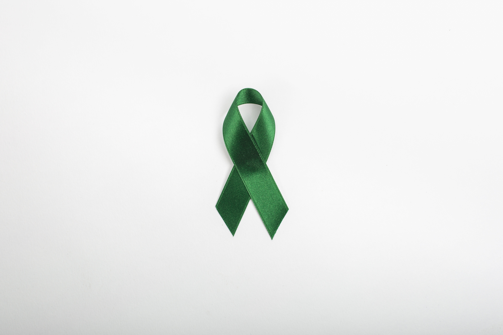

This is a website created to raise awareness about scoliosis and to provide resources for girls who have the illness. Did you know that 10% of women in the US have scoliosis? That's compared to only 5% of men having scoliosis. Teenage girls are much more likely to have scoliosis than any other gender and age group. Scoliosis Awareness for Girls is here to help girls afford spinal fusion surgery and allow them to express their experiences on a platform. Scoliosis doesn't only affect how you look its affects how you feel. Scoliosis has led to low self esteem amongst girls.As your body develops you notice differences and scoliosis changes how your body appears. Scoliosis affects everyone differently.But it often leads to unbalanced shoulders, legs, and arms.This plays a role on how you appear to others.I've been told that i've been leaning over even when I don't notice it. I've had to make an extra effort on my posture especially as an athlete. Spinal fusion surgery will help with my posture but takes a long recovery time and isn't accessible to everyone. This website shows resources that will possibly help people afford their surgery and physical therapy.
